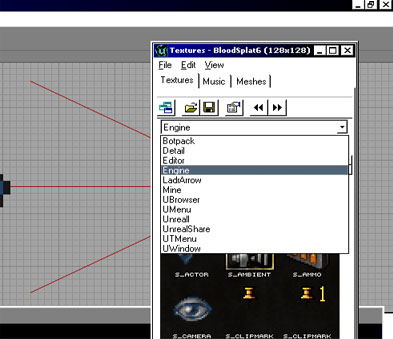

Blood Effects
How to Make Blood Effects in UnrealED 2.0
By JustaAverageKid
Summary of It all
- Make sheet where blood will go [correct size]
- Add the blood texture you want
- Make it Modulated Unlit and Two-Sided
Hello, hello! So you wanna learn how to make a nice looking blood effect on a wall?? Well it's quite simple, truth to be told. So let's get started. I assume you know how to make a basic level and all that good stuff. So get to where you want the blood effect and open the Texture Browser. Click the first drop-down menu [see screenshot] and select engine. Not too bad, yet. Is it?

Makes your mouth water, no? ...no. |
Agh, now we see these millions of textures and essential images and stuff, so try not to go berserk in here  Anyways, scroll scroll scroll down til you find the blood-like effects, they should look like this.
Anyways, scroll scroll scroll down til you find the blood-like effects, they should look like this.
would typing "blood" into the filter box be quicker?
![[bloodfx2]](images/bloodfx2.jpeg) I think most all textures with these gray backgrounds fit this tutorial, go ahead and see! |
- Select blood texture you want
- Check its size (right-click menu → Properties)
- Make a sheet with matching characteristics
- Add it where it's needed (You can make it a semisolid if you'd like, it won't hurt; I've found that BSP and HOM errors occur frequently if you use a cube to do this, so use sheets ; one more thing, don't intersect the sheet and what you are adding it to or BSP and HOM errors come hovering back)
Ok, now it feels solid but there's one more thing, the gray crud! Well that's too bad, we'll leave it there.
THE END
Hahaha, j/k select the blood effect and go to its Surface Flags (UT) and enter these selections:
- modulated
- two-sided
- unlit
Congratulations! You've got the bloody thing done.
Make sure unlit is selected or else when your lighting is done, your blood effect will have shadows and a mind of its own |

FINAL RESULTS:
![[bloodfxfinal]](images/bloodfxfinal.jpeg) IMHO, I think these blood effects should only be done on walls and ceilings, not floors because a player often uses seeing blood effects to notify the trail of his/her enemy. Normally blood doesnt spatter onto walls & ceilings |
Discussion
EricBlade: I see that this specifically states in UEd 2, I don't know if UEd 2 had Projectors, but this tutorial could probably be updated for use of Projectors, or a new one that specifically relates to UEd 3 .. that would be the preferred way of doing something like this now, wouldn't it?